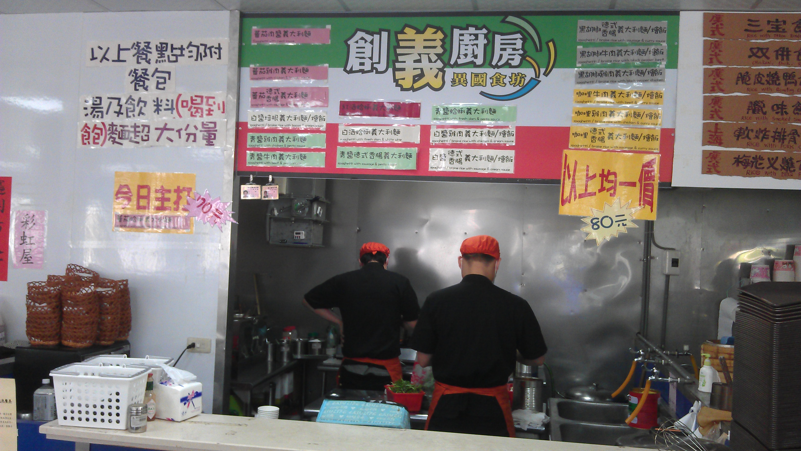

創義廚房
男一燒臘快餐麵食 | 早餐吧創義廚房 | 味豐自助餐
- 本校營業地點位置 男一餐廳
- 餐飲業者名稱 創義廚房
- 公司名稱 巧運有限公司
- 每周一到六營業 11:30-14:00 16:00-20:00
- 聯絡電話 0982-480965 0988-714997
- 營業項目、型態 義式料理套餐、麵包(冷、熱飲喝到飽)
- 業者簡介
以平價的消費，享受外面市場所擁有的義式料理是我們的宗旨。 不斷的創新以及開發料理，是我們的店名由來。為了讓學生享受義式料理的多元文化，以及對西餐料理的認同、以及肯定，所以我們會努力地用專業的技術讓同學們對義式料理的改觀，平價消費也能吃到大餐廳的感覺。
餐廳業者參考照片
- 